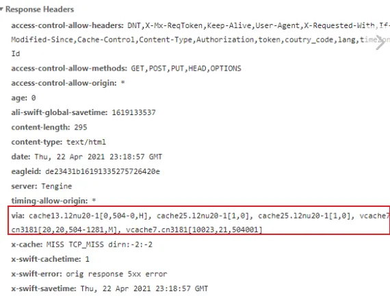

trouble-阿里云
- TAGS: Trouble
aliyun-CDN
访问504
【问题描述】
国内没有原站， 针对原站在海外， 国内访问504的 链路关系为: 客户端国内——CDN———海外源（新加坡）
【问题总结】
原因： 国内访问海外源需要经过防火墙，跨境链路存在不稳定性，不可避免会有偶发性5xx。
解决：
最好的解决方案是：分区域访问，新增一个国内的源站，来覆盖国内用户访问， 新加坡源站作为海外源站覆盖海外客户访问，cdn可以特殊配置不同区域回不同 源站，这个方案要求两个不同源站的数据要实时做好同步，来保证业务访问。
静态： qa链路关系为：客户端——CDN——CDN源全球加速（国内IP香港）——海外源（新加坡） 生产链路关系为：客户端——CDN——CDN源（国内源IP+海外源新加坡） 动态 基本上都是回源，所以更需要分区访问来保证业务可用性
排查工具：
- 自动检测：https://cdn.dns-detect.alicdn.com/https/doc.html ，可收集用户出口ip和dns
- 浏览器访问：F12抓包的请求响应头，via中vcache7.cn3181代表一组CDN缓存节点
- 访问的URL
- ping域名的截图
- 异常时间点
- 异常现象
